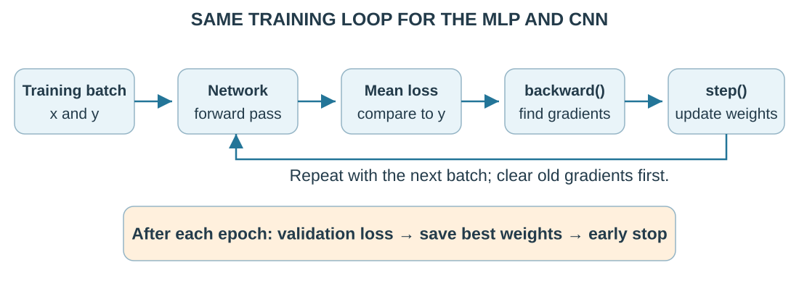
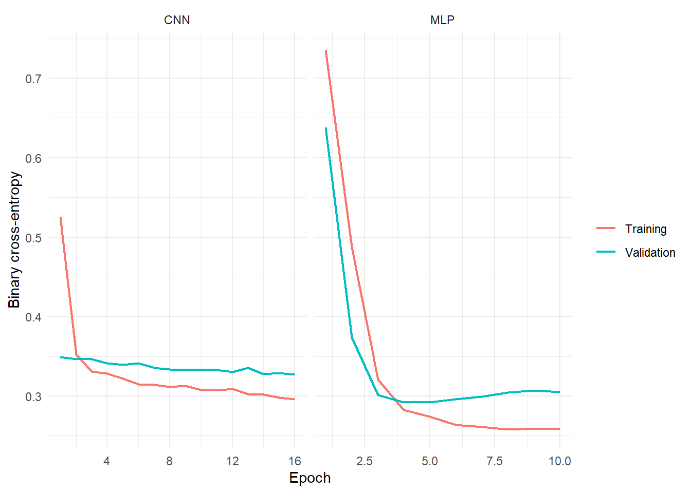

optimizer <- optim_adam(model$parameters, lr = 0.01) # Weights and biases to update
model$train() # Enable training behavior, including dropout when present
# Repeat these lines for each batch:
optimizer$zero_grad() # Erase old gradients
logits <- model(x_batch) # Forward pass: one logit per shot
loss <- nnf_binary_cross_entropy_with_logits(logits, y_batch) # Mean batch loss
loss$backward() # Calculate gradients using the chain rule
optimizer$step() # Update weights using those gradients
loss$item() # Read the one-value loss tensor as an R number3.3 Training and Tuning Neural Networks
How to train, choose settings, and know when to stop
1 Learning objectives
After this tutorial, you should be able to:
- distinguish an epoch, mini-batch, gradient, and optimizer step;
- explain how training settings affect learning;
- use validation loss for early stopping and tuning;
- design a small tuning experiment without touching the test set; and
- spot overfitting and accidental use of test information.
2 One training iteration
Tutorial 3.2 followed one prediction backward to its weight gradients. Training repeats that process on mini-batches, small groups of shots. Average their losses before calculating gradients:
Here means all weights and biases; counts shots. Losses 0.2 and 0.6 average to . Plain gradient descent uses
where lists the loss gradients. The learning rate controls update size: increases a weight whose gradient is negative.
One epoch visits every training shot once. In this loop, one optimizer step updates weights from one batch. Our 953 shots give 15 steps: 14 batches of 64 and one of 57.
Follow this order. R torch adds new gradients to stored ones, so clear them before processing the next batch:
Here is the core of fit_binary_model() from torch_helpers.R. model, x_batch, and y_batch stand for a network and one prepared batch. Create the optimizer once, then repeat the batch block:

3 Why Adam is useful
An optimizer turns gradients into weight updates. We use Adam: it averages recent gradients and adjusts each weight’s step size, smoothing differences between batches. You still choose the overall learning rate.
NoteOptional: the Adam equations
For gradient at step , Adam keeps running averages and . The values control how much past information is retained:
Both averages start at zero. Correct that starting-point effect using and , then update:
The denominator scales each parameter’s step; the small positive prevents division by zero. These calculations apply separately to each weight and bias.
4 Standardization and initialization
Standardization puts inputs on comparable scales so larger numeric units do not dominate:
Subtract feature ’s training mean and divide by its training standard deviation . For distance 20, mean 15, and standard deviation 5, . Reuse training means and standard deviations for validation, test, and future shots.
Initialization gives weights starting values. Different random starts let hidden neurons learn different patterns; identical starts can keep them learning the same thing. We use R torch’s defaults.
A random seed makes runs repeatable. Compare settings with the same seed, then repeat promising choices with several seeds to avoid trusting one lucky start.
5 Early stopping
Overfitting means learning training-specific details that do not help new predictions. A warning sign is falling training loss with rising validation loss. Early stopping keeps the best validation version:
- evaluate validation loss after each epoch;
- save a copy of the weights, called a checkpoint, when it improves;
- stop after patience epochs without improvement; and
- restore the best saved parameters.
The test set plays no role in this procedure.
For losses and patience 3, epoch 3 is best. Epochs 4–6 bring no improvement, so stop at 6 and restore epoch 3. Our helper counts only improvements greater than .
5.1 Training mode and evaluation mode
Use model$train() to fit and model$eval() to predict. Evaluation mode turns off dropout, which randomly sets some hidden outputs to zero during training to discourage reliance on individual neurons. The MLP here has no dropout; the CNN introduced in 3.4 uses 10% in its dense layers. Separately, with_no_grad() skips recording calculations for backpropagation. Use both for validation.
These saved curves show the MLP’s best epoch at 5. The CNN reached its 16-epoch limit; a limit can end training before patience runs out. Lower loss is better; watch for rising validation loss.

6 Which settings should be tuned?
Hyperparameters are choices you set, unlike weights learned during training. Regularization limits overfitting: weight decay discourages large weights; dropout temporarily removes hidden outputs. Start with learning rate, then network size.
| Setting | Too small | Too large | Example starting values |
|---|---|---|---|
| Learning rate | Slow progress | Loss jumps or grows | 0.001 to 0.01 |
| Batch size | Noisier updates, more steps | More memory per step | 32 to 128 |
| Width: neurons per hidden layer | Misses useful patterns | More overfitting and time | 6 to 32 |
| Depth: hidden layers | Limited complexity | Harder to train | 1 to 3 |
| Weight decay | Little restraint on weights | Restricts learning too much | 0 to 0.001 |
| Dropout rate | Little effect | Removes too much information | 0 to 0.30 |
| CNN filters (Tutorial 3.4) | Fewer pattern detectors | More weights and time | 4 to 16 per layer |
| CNN kernel size (Tutorial 3.4) | Sees a small area | More weights and computation |
These are suggestions; the experiment below tests only learning rate.
7 A small learning-rate experiment
Keep the MLP structure, seed, and batch size fixed; try three learning rates. Each run gets at most 12 epochs. Compare validation log loss, the mean binary cross-entropy used in 3.2; lower is better.
Show the learning-rate experiment
library(torch)
source("R/torch_helpers.R")
shots <- readRDS("data/soccer_shots.rds")
tensors <- make_tensors(shots)
candidate_rates <- c(0.001, 0.005, 0.01)
tuning_results <- lapply(candidate_rates, function(rate) {
torch_manual_seed(431)
fit <- fit_binary_model(
model = mlp_module(10),
x = tensors$tabular,
y = tensors$target,
training_indices = tensors$train,
validation_indices = tensors$validation,
epochs = 12,
batch_size = 64,
learning_rate = rate,
patience = 3,
seed = 431
)
data.frame(
learning_rate = rate,
best_epoch = fit$best_epoch,
validation_log_loss = fit$best_validation_loss
)
}) %>%
bind_rows()results$tuning %>%
knitr::kable(digits = 3)| learning_rate | best_epoch | validation_log_loss | elapsed_seconds |
|---|---|---|---|
| 0.001 | 12 | 0.429 | 0.75 |
| 0.005 | 7 | 0.294 | 0.54 |
| 0.010 | 5 | 0.292 | 0.47 |
In these saved results, rate 0.001 improved through the final allowed epoch but had the highest loss. Rates 0.005 and 0.01 were close. The saved model uses 0.01; repeat seeds before trusting its small advantage.
8 Choose settings one step at a time
Use validation data to make each choice:
- Keep the data split, input preparation, scoring rule, and seeds fixed.
- Start with a small network; check that training loss falls.
- Try learning rates spread across scales, such as 0.001, 0.003, and 0.01.
- Compare one or two network sizes.
- If training improves but validation worsens, try weight decay or dropout.
- Fit the chosen model and evaluate the untouched test set once.
Here, the final fit still uses training shots for updates and validation shots for early stopping. Combining them requires a different stopping plan decided beforehand. Never use test loss to choose when to stop.
Changing one setting at a time makes comparisons easier. Trying many settings can also overfit validation data, making the winning score too optimistic.
TipCheckpoint: choose the next action
Your MLP has patience 5. Training loss keeps falling, but validation loss has risen for five epochs. A classmate suggests checking test loss after each extra epoch and keeping the best test checkpoint.
Write the next action you would take and identify which data may support it.
Check your reasoning
Stop and restore the best validation checkpoint. Further tuning uses training and validation data. Selecting weights using test loss lets test information influence the model; a new independent test set would then be needed for final evaluation.
9 Diagnose training problems
| Pattern | Likely cause | First response |
|---|---|---|
Loss is NaN (not a number) |
Invalid inputs or unstable arithmetic | Check inputs; try a lower learning rate |
| Loss barely changes | Small learning rate or weights not updating | Check gradients and optimizer steps; then try a larger rate |
| Training loss falls, validation rises | Overfitting | Stop earlier; try a smaller network or weight decay |
| Both losses remain high | Underfitting: missing useful patterns | Check training; try better inputs or a slightly larger network |
| Results vary greatly by seed | Results depend on random starts | Repeat seeds; compare their spread |
10 Practice
- With 953 observations and batch size 64, how many optimizer steps occur in one epoch?
- Why should learning rates be compared on a logarithmic rather than a narrowly linear scale?
- What information is saved when validation loss improves during early stopping?
- Training loss falls while validation loss rises. Name two reasonable responses.
TipShow answers
- optimizer steps.
- Useful learning rates often differ by orders of magnitude; values such as 0.001, 0.003, and 0.01 explore the scale more effectively than tiny equal increments.
- A copy of the weights and biases. Our helper also records the best epoch and validation loss so it can restore the selected model.
- Stop at the best validation epoch, reduce network width or depth, add weight decay or modest dropout, or collect more representative training data.
11 Key takeaways
- Backpropagation produces gradients; an optimizer determines how gradients change parameters.
- Early stopping saves the best validation weights, not simply the last weights.
- Tune with validation data and reserve test data for final reporting.
- Change a few settings at a time and check promising choices across seeds.